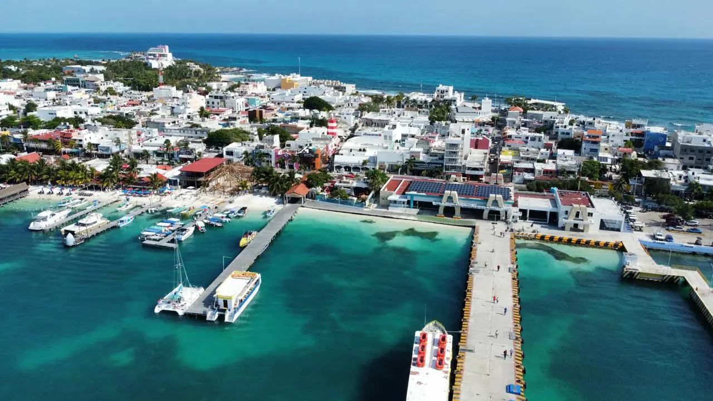

Lo que preguntan nuestros clientes antes de firmar: cuánto cuesta, qué trámite hace falta, qué material aguanta este clima y qué hacer cuando algo falla. Precios de 2026 para la Riviera Maya.

Cómo se arma un presupuesto por partidas, qué debe incluir y cómo comparar dos sin equivocarse.
Precios 2026 por tamaño y tipo, qué incluye la obra y cuánto cuesta mantenerla al mes.
Costo por m² rentable, estacionamiento, servicios y ejemplos por ciudad en 2026.
Precios por m² por nivel, costos ocultos del local en obra gris y tiempos.
Presupuestos de 400 a 2,000 m² rentables en Cancún.
Presupuestos de 400 a 2,000 m² rentables en Playa del Carmen.
Presupuestos de 400 a 2,000 m² rentables en Tulum.
Presupuestos de 400 a 2,000 m² rentables en Puerto Morelos.
Presupuestos de 400 a 2,000 m² rentables en Puerto Aventuras.
Locales de 40 y 80 m², cafeterías y marcas premium en Cancún.
Locales de 40 y 80 m², cafeterías y marcas premium en Playa del Carmen.
Locales de 40 y 80 m², cafeterías y marcas premium en Tulum.
Locales de 40 y 80 m², cafeterías y marcas premium en Puerto Morelos.
Locales de 40 y 80 m², cafeterías y marcas premium en Puerto Aventuras.
Obra gris, adecuación, estacionamiento y ejemplos por ciudad en 2026.
Niveles básico, corporativo y médico por m², y qué falta en la obra gris.
Presupuestos de 600 a 2,000 m² en Cancún.
Presupuestos de 600 a 2,000 m² en Playa del Carmen.
Presupuestos de 600 a 2,000 m² en Tulum.
Presupuestos de 600 a 2,000 m² en Chetumal.
Oficinas de 60 y 150 m² y remodelación en Cancún.
Oficinas de 60 y 150 m² y remodelación en Playa del Carmen.
Oficinas de 60 y 150 m² y remodelación en Tulum.
Oficinas de 60 y 150 m² y remodelación en Chetumal.
Precios 2026 por m² y por proyecto, ejemplos y qué mueve el costo.
Precios 2026 por m² y por proyecto, ejemplos y qué mueve el costo.
Precios 2026 por m² y por proyecto, ejemplos y qué mueve el costo.
Precios 2026 por m² y por proyecto, ejemplos y qué mueve el costo.
Precios 2026 por m² y por proyecto, ejemplos y qué mueve el costo.
Precios 2026 por m² y por proyecto, ejemplos y qué mueve el costo.
Precios 2026 por m² y por proyecto, ejemplos y qué mueve el costo.
Precios 2026 por m² y por proyecto, ejemplos y qué mueve el costo.
Precios 2026 por m² y por proyecto, ejemplos y qué mueve el costo.
Precios 2026 por m² y por proyecto, ejemplos y qué mueve el costo.
Precios 2026 por m² y por proyecto, ejemplos y qué mueve el costo.
Precios 2026 por m² y por proyecto, ejemplos y qué mueve el costo.
Precios 2026 por m² y por proyecto, ejemplos y qué mueve el costo.
Precios 2026 por m² y por proyecto, ejemplos y qué mueve el costo.
Obra y mobiliario por llave según categoría, costos indirectos y factores por ciudad.
Por m², por llave y presupuestos de 12 y 20 llaves en diez ciudades.
Renovación ligera, habitaciones completas y reposicionamiento por llave.
Presupuestos de 20, 40 y 120 llaves en Cancún.
Presupuestos de 20, 40 y 120 llaves en Playa del Carmen.
Presupuestos de 20, 40 y 120 llaves en Tulum.
Presupuestos de 20, 40 y 120 llaves en Puerto Morelos.
Presupuestos de 20, 40 y 120 llaves en Cozumel.
Presupuestos de 20, 40 y 120 llaves en Bacalar.
Presupuestos de 20, 40 y 120 llaves en Holbox.
Presupuestos de 20, 40 y 120 llaves en Isla Mujeres.
Costo por llave y partidas en Cancún.
Costo por llave y partidas en Playa del Carmen.
Costo por llave y partidas en Tulum.
Costo por llave y partidas en Cozumel.
Costo por llave y partidas en Puerto Morelos.
Costo por llave y partidas en Isla Mujeres.
Costo por llave y partidas en Costa Mujeres.
Por m² y por unidad, de 4 a 60 unidades, indirectos y precios en 10 ciudades.
Preconstrucción, precio alzado o máximo garantizado, hitos de preventa y entrega.
Presupuestos de 4 a 16 unidades en Cancún.
Presupuestos de 4 a 16 unidades en Playa del Carmen.
Presupuestos de 4 a 16 unidades en Puerto Morelos.
Presupuestos de 4 a 16 unidades en Costa Mujeres.
Presupuestos de 4 a 16 unidades en Bacalar.
Presupuestos de 4 a 16 unidades en Chetumal.
Partidas, costo total y factores por ciudad en 2026.
Partidas, costo total y factores por ciudad en 2026.
Partidas, costo total y factores por ciudad en 2026.
Partidas, costo total y factores por ciudad en 2026.
Partidas, costo total y factores por ciudad en 2026.
Partidas, costo total y factores por ciudad en 2026.
Partidas, costo total y factores por ciudad en 2026.
Partidas, costo total y factores por ciudad en 2026.
Partidas, costo total y factores por ciudad en 2026.
Partidas, costo total y factores por ciudad en 2026.
Partidas, costo total y factores por ciudad en 2026.
Partidas, costo total y factores por ciudad en 2026.
Partidas, costo total y factores por ciudad en 2026.
Partidas, costo total y factores por ciudad en 2026.
Partidas, costo total y factores por ciudad en 2026.
Partidas, costo total y factores por ciudad en 2026.
Partidas, costo total y factores por ciudad en 2026.
Partidas, costo total y factores por ciudad en 2026.
Partidas, costo total y factores por ciudad en 2026.
Partidas, costo total y factores por ciudad en 2026.
Partidas, costo total y factores por ciudad en 2026.
Partidas, costo total y factores por ciudad en 2026.
Partidas, costo total y factores por ciudad en 2026.
Partidas, costo total y factores por ciudad en 2026.
Partidas, costo total y factores por ciudad en 2026.
Partidas, costo total y factores por ciudad en 2026.
Partidas, costo total y factores por ciudad en 2026.
Partidas, costo total y factores por ciudad en 2026.
Partidas, costo total y factores por ciudad en 2026.
Partidas, costo total y factores por ciudad en 2026.
Partidas, costo total y factores por ciudad en 2026.
Partidas, costo total y factores por ciudad en 2026.
Partidas, costo total y factores por ciudad en 2026.
Partidas, costo total y factores por ciudad en 2026.
Partidas, costo total y factores por ciudad en 2026.
Partidas, costo total y factores por ciudad en 2026.
Partidas, costo total y factores por ciudad en 2026.
Cesión de derechos, dominio pleno y por qué sin escritura no hay licencia.
La franja federal de 20 m, la concesión, derechos anuales y qué se puede construir.
MIA federal o estatal, costo del estudio, tiempos y cambio de uso de suelo forestal.
Georradar, tomografía y sondeos; qué hacer si aparece una caverna.
Transformador CFE, Aguakan o CAPA, drenaje o planta: costos y tiempos.
Los 20 puntos jurídicos, normativos, físicos y de costo antes de firmar.
Anticipo normal, hitos de pago, retención y pagos desde el extranjero.
Qué incluye cada etapa, su peso en el presupuesto y precio por m².
Casa habitación exenta, cuándo aplica 16% y por qué la factura baja el ISR al vender.
Quién la firma, qué se anota y cómo protege al propietario.
Pruebas, lista de pendientes, documentos, retención y vicios ocultos.
Órdenes de cambio, partidas a definir, imprevistos y cláusulas de precio.
Zonas de exposición, inoxidable 316 vs 304, cancelería, concreto y aires cerca del mar.
Por qué sale moho en la costa y qué decisiones de diseño y aire lo evitan.
Tratamiento de suelo, maderas que resisten, palapas y revisiones.
Ácido sulfhídrico, corrosión de aires y electrónica, distribución y limpieza.
Varilla expuesta y concreto desprendido: reparación correcta y costo por m².
Registro turístico, impuestos retenidos, protección civil y reglamento del condominio.
Horarios, depósito, registro de trabajadores y qué no se puede tocar.
Precio, plazo, control y riesgo: cuándo conviene cada opción.
Predial, cuotas, seguro, fideicomiso, servicios y mantenimiento por año.
Precio por m² 2026 por nivel de acabado y qué encarece o abarata construir en Bacalar.
Precio por m² 2026 por nivel de acabado y qué encarece o abarata construir en Cozumel.
Precio por m² 2026 por nivel de acabado y qué encarece o abarata construir en Isla Mujeres.
Precio por m² 2026 por nivel de acabado y qué encarece o abarata construir en Holbox.
Precio por m² 2026 por nivel de acabado y qué encarece o abarata construir en Chetumal.
Precio por m² 2026 por nivel de acabado y qué encarece o abarata construir en Mahahual.
Paneles, acordeón, enrollables o vidrio de impacto: protección y precio por m².
Puntas, bajantes, tierras y supresores según NMX-J-549-ANCE, con costos.
Cercas, desagües antiatrapamiento, alarmas y señalización.
Primeras 72 horas, deducible de huracán, inspección y reparación.
Por qué la villa cae en DAC y cómo salir con paneles, aislamiento y equipos.
Impermeabilizante reflectivo, poliestireno, azotea verde: costo y ahorro.
Solar, gas, eléctrico o bomba de calor; sarro y dimensionamiento.
Capacidades, ubicación, tubería, dictamen y costos.
Tinaco, hidroneumático o presurizador variable; tamaño de cisterna.
Bomba de calor, solar o gas: costo instalado y mensual.
Fibra, Starlink, cableado y access points para que llegue a la alberca.
Valor comercial, bancario y catastral; quién lo hace y cuánto cuesta.
Opciones de ISR para no residentes y qué costos se deducen.
Requisitos municipales, lote mínimo, costos y tiempos.
Claros, costo por m², salitre y cuándo conviene cada losa.
Costo, velocidad, aislamiento y comportamiento ante huracanes.
Qué resiste sol, calor y limón; precio instalado por m².
Piedra local, cantera, travertino, fijación y sellado en la costa.
Qué obra requiere licencia, aviso de obra menor o DRO; tiempos y derechos.
Horarios, depósito, registro de trabajadores y qué no se puede tocar.
Porcentaje o por m², qué entrega cada fase e ingenierías.
Brisas del sureste, sol poniente, aleros, alturas y patios.
Recámaras con baño, unidad independiente, operación y acabados.
Restricciones, ventanas, muros medianeros, servidumbres y acta de colindancias.
Nivel de piso, pendientes, rejillas y pozos pluviales.
Losa o pilotes sobre arena, dunas, manglar y concreto junto al mar.
Suavizador, carbón, UV y ósmosis inversa: costos y mantenimiento.
Estructura, humedad, instalaciones y papeles antes de firmar.
Uso de suelo, incendios, salidas, aguas residuales y costo por cuarto.
Cargas, doble impermeabilización, detección de fugas y costo.
Biopiscinas sin cloro y albercas tipo cenote; reglas sobre cenotes reales.
Cercas, desagües antiatrapamiento, alarmas y señalización.
Precio por m², dónde conviene, diferencia con el cemento pulido y cuidados en clima costero.
Cómo se ejecuta bien, juntas de control, acabados y precio por m².
Madera dura o composite, estructura ventilada, precios y mantenimiento junto a alberca y mar.
Qué maderas resisten aquí, anclajes, cubiertas, precio por m² y mantenimiento real.
Series, cristal de control solar, salinidad y huracanes, y precio por m² instalado.
Fases, entregables, honorarios y cómo se conecta con la licencia de construcción.
Qué entrega el estudio, cómo se hace en roca caliza y por qué evita cimentar sobre un hueco.
COS, CUS, densidad y altura: cómo verificar qué puede construir antes de comprar el terreno.
Qué firma un DRO, qué responsabilidad asume y cuánto cobra en 2026.
Cláusulas indispensables, anticipos, órdenes de cambio y garantías.
Qué se revisa y en qué momentos, qué se documenta y cuánto cuesta supervisar a distancia.
Tipos, cálculo, drenaje y precio por m² de paramento.
Cuándo sí y cuándo no en suelo kárstico, y qué alternativas sí se autorizan.
Cuánta agua se puede captar, componentes del sistema y costos 2026.
Filtración, capilaridad o condensación: cómo distinguirlas y qué repara cada una.
Cuáles son peligrosas, cómo saber si siguen activas y cuánto cuesta repararlas.
Peso, capas, impermeabilización y precio por m² en clima tropical.
Natural o artificial, riego, plantas que aguantan aquí y precio por m².
Aspersión o goteo, sectorización y consumo real de agua.
Costo por metro lineal, cimentación y cuándo deja de ser barda.
Tipos, motor adecuado, respaldo ante apagones y salinidad.
Tipos de lámina, control solar, viento y por qué gotean.
Prefabricado u obra, base estructural y consumo.
Huella y peralte correctos, tipos, armado y costo.
Costo por m², circuitos, tierra física y clima costero.
Capas de luz, temperatura de color, IP en costa y control.
Qué entrega, por qué antes de comprar y precio 2026.
Termita, humedad y huracán: cuándo la madera sí funciona.
Su opinión ayuda a otros propietarios a decidir, y a nosotros a mejorar.
Escribir una reseñaVer reseñas en Google